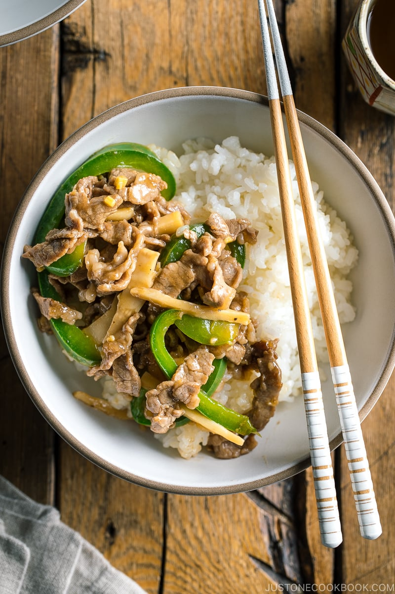

Chinjao Rosu

Description
Chinjao rosu is a Chinese-inspired dish that has become popular with homecooks across Japan.
Healthy and savory, this dish is easy to throw together in just a few minutes with a few simple ingredients
Ingredients
- 300 grams thinly sliced beef
- 2 green peppers
- 100 grams bamboo shoot
- 1 tablespoon soy sauce
- 1 tablespoon oystersauce
- 2 cloves minced garlic
Directions
- Mix together your soy sauce and oyster sauce
- Thinly slice your peppers and bamboo shoots
- Add some neutral cooking oil to a pan, and turn on the heat
- Cook minced garlic in pan until fragrant, about one minute
- Add your peppers, and cook for another 2-3 minutes
- Remove peppers and garlic, and add a bit more oil to the pan
- Add your thinly sliced beef. Cook until no longer red, about 3 minutes
- Reintroduce your peppers and garlic to the pan
- Add the sauce mixture. Stir fry until sauce thickens
- Serve over a bed of rice, and enjoy!